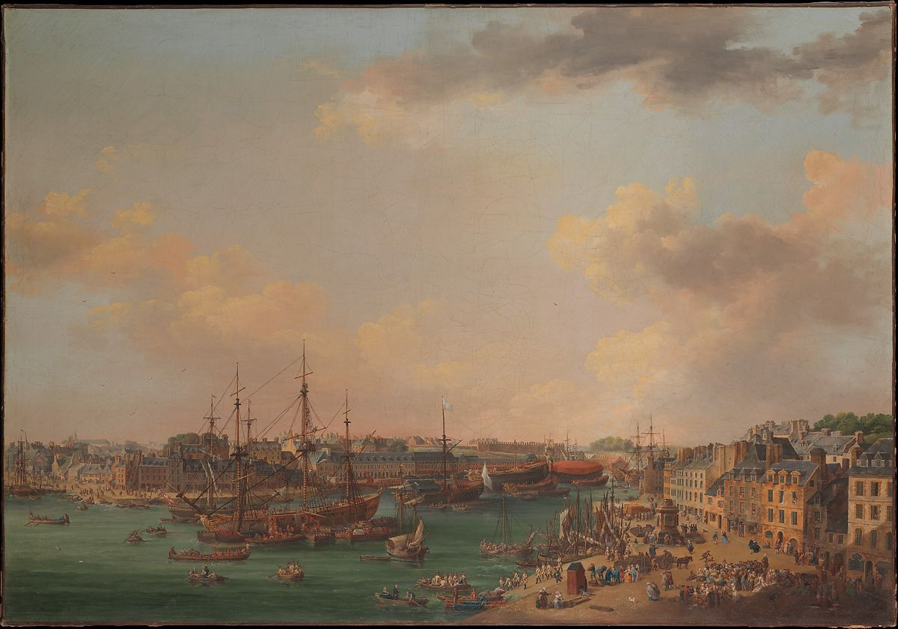

<head>
<meta charset="UTF-8" />
<meta name="keywords" content="drawing, painting" />
<meta name="description" content="drawings by Sunjy" />
<title>Sunjy</title>
<link rel="shortcut icon" type="image/x-icon" href="../../mImages/mCommon/favicon.ico" media="screen" />
<link rel="stylesheet" type="text/css" href="../../mCsses/mCommon/mCssA.css" />
<link rel="stylesheet" type="text/css" href="../../mCsses/mCommon/mCssB.css" />
<link rel="stylesheet" type="text/css" href="../../mCsses/mCommon/mCssC.css" />
<link rel="stylesheet" type="text/css" href="../../mCsses/mCommon/mCssD.css" />
<link rel="stylesheet" type="text/css" href="../../mCsses/mContent/mCssA.css" />
<link rel="stylesheet" type="text/css" href="../../mCsses/mContent/mCssB.css" />
<link rel="stylesheet" type="text/css" href="../../mCsses/mContent/mCssC.css" />
<link rel="stylesheet" type="text/css" href="../../mCsses/mContent/mCssD.css" />
</head>
<script type="text/javascript" src="../../mScripts/mContent/mContentAA.js" /></script>
<script type="text/javascript" src="../../mScripts/mContent/mContentAB.js" /></script>
<script type="text/javascript" src="../../mScripts/mContent/mContentAC.js" /></script>
<script type="text/javascript" src="../../mScripts/mContent/mContentAD.js" /></script>
<script type="text/javascript"></script> 
<script type="text/javascript">
document.write('<div class="mImgAbsolute"></div>');
/*
document.write('<p class="mFontSizeBColor" />From a white paper...</p>');
document.write('<table class="center"><tr><td>');
document.write('');
document.write('</td></tr></table>');
*/
</script>


<script type="text/javascript">
document.write('<p class="mFontSizeBColor" />The Outer Harbor of Brest</p>');
document.write('<p class="mFontSizeSColor" />By Henri Joseph van Blarenberghe, 1773. Between 1753 and 1765, in fulfillment of a commission from Louis XV, Joseph Vernet (1714–1789) completed highly complex, detailed views of many of the important ports of France. However, he abandoned the project before painting Brest, in Brittany.<br><br>Later, when the secretary of state for the navy wished to present evidence of the building works in Brest, Louis Nicolas van Blarenberghe (1716–1794) was engaged. Between January 18 and April 2, 1773, six gouaches documenting the harbor and naval facilities at Brest were prepared jointly with his son Henri Joseph van Blarenberghe. Finished views were painted later. As Louis Nicolas was principally a miniaturist, the present canvas is attributed to the younger artist, who describes in compelling detail not only the military features of the port but its soldiers, sailors, and citizenry.</p>');
document.write('<table class="center" /><tr><td>');
document.write('<br>Later, when the secretary of state for the navy wished to present evidence of the building works in Brest, Louis Nicolas van Blarenberghe (1716–1794) was engaged. Between January 18 and April 2, 1773, six gouaches documenting the harbor and naval facilities at Brest were prepared jointly with his son Henri Joseph van Blarenberghe. Finished views were painted later. As Louis Nicolas was principally a miniaturist, the present canvas is attributed to the younger artist, who describes in compelling detail not only the military features of the port but its soldiers, sailors, and citizenry." />');
document.write('</td></tr></table>');
</script>


